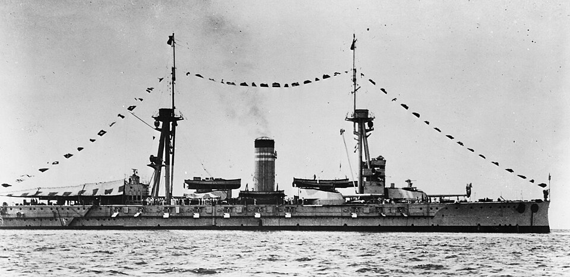

Jaime I
Acorazado de España, perteneciente a la clase España. Fue el tercero de los acorazados de la clase España.

Diseño y función
Jaime I pertenecía a la clase España. Acorazado de escuadra y apoyo artillero. Sus prestaciones se detallan en la tabla técnica, con las fechas o condiciones disponibles en la referencia.
Operaciones y trayectoria
Fue el tercero de los acorazados de la clase España. Durante la Guerra Civil permaneció con la flota republicana y realizó operaciones en el Mediterráneo y el estrecho de Gibraltar.
Destino final y conservación
Destruido por una explosión interna en Cartagena en junio de 1937; sus restos fueron desguazados posteriormente.